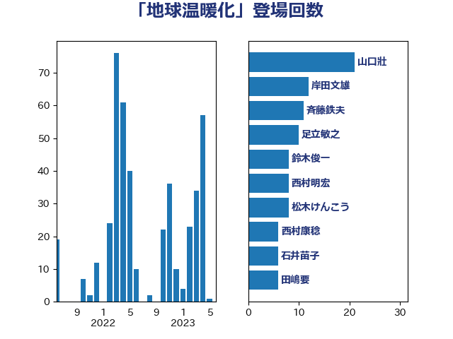

単語「地球温暖化」

| 山口壯 | 自由民主党 | 21 回 |
| 岸田文雄 | 自由民主党 | 12 回 |
| 斉藤鉄夫 | 公明党 | 11 回 |
| 足立敏之 | 自由民主党 | 10 回 |
| 鈴木俊一 | 自由民主党 | 8 回 |
| 西村明宏 | 自由民主党 | 8 回 |
| 松木けんこう | 立憲民主党 | 8 回 |
| 西村康稔 | 自由民主党 | 6 回 |
| 石井苗子 | 日本維新の会 | 6 回 |
| 田嶋要 | 立憲民主党 | 6 回 |
| 務台俊介 | 自由民主党 | 6 回 |
| 青木愛 | 立憲民主党 | 5 回 |
| 神津たけし | 立憲民主党 | 5 回 |
| 牧野たかお | 自由民主党 | 5 回 |
| 熊谷裕人 | 立憲民主党 | 5 回 |
| 比嘉奈津美 | 自由民主党 | 5 回 |
| 山口俊一 | 自由民主党 | 5 回 |
| 串田誠一 | 日本維新の会 | 5 回 |
| 中川康洋 | 公明党 | 5 回 |
| 青山繁晴 | 自由民主党 | 4 回 |
| 関芳弘 | 自由民主党 | 4 回 |
| 鈴木義弘 | 国民民主党 | 4 回 |
| 野村哲郎 | 自由民主党 | 4 回 |
| 足立康史 | 日本維新の会 | 4 回 |
| 萩生田光一 | 自由民主党 | 4 回 |
| 紙智子 | 日本共産党 | 4 回 |
| 篠原孝 | 立憲民主党 | 4 回 |
| 松本剛明 | 自由民主党 | 4 回 |
| 山本佐知子 | 自由民主党 | 4 回 |
| 安江伸夫 | 公明党 | 4 回 |
| 塩崎彰久 | 自由民主党 | 4 回 |
| 堤かなめ | 立憲民主党 | 4 回 |
| 中川宏昌 | 公明党 | 4 回 |
| 輿水恵一 | 公明党 | 3 回 |
| 田村貴昭 | 日本共産党 | 3 回 |
| 田中健 | 国民民主党 | 3 回 |
| 梶山弘志 | 自由民主党 | 3 回 |
| 林芳正 | 自由民主党 | 3 回 |
| 山田美樹 | 自由民主党 | 3 回 |
| 山崎正恭 | 公明党 | 3 回 |
| 尾崎正直 | 自由民主党 | 3 回 |
| 宮崎雅夫 | 自由民主党 | 3 回 |
| 大島敦 | 立憲民主党 | 3 回 |
| 坂本祐之輔 | 立憲民主党 | 3 回 |
| 吉田宣弘 | 公明党 | 3 回 |
| 古賀篤 | 自由民主党 | 3 回 |
| 高村正大 | 自由民主党 | 2 回 |
| 阿部知子 | 立憲民主党 | 2 回 |
| 金子恵美 | 立憲民主党 | 2 回 |
| 野上浩太郎 | 自由民主党 | 2 回 |
| 近藤昭一 | 立憲民主党 | 2 回 |
| 谷田川元 | 立憲民主党 | 2 回 |
| 角田秀穂 | 公明党 | 2 回 |
| 福山哲郎 | 立憲民主党 | 2 回 |
| 礒崎哲史 | 国民民主党 | 2 回 |
| 田名部匡代 | 立憲民主党 | 2 回 |
| 源馬謙太郎 | 立憲民主党 | 2 回 |
| 櫛渕万里 | れいわ新選組 | 2 回 |
| 梅村みずほ | 日本維新の会 | 2 回 |
| 柳本顕 | 自由民主党 | 2 回 |
| 徳永エリ | 立憲民主党 | 2 回 |
| 岸真紀子 | 立憲民主党 | 2 回 |
| 岩渕友 | 日本共産党 | 2 回 |
| 山口那津男 | 公明党 | 2 回 |
| 室井邦彦 | 日本維新の会 | 2 回 |
| 塩田博昭 | 公明党 | 2 回 |
| 堀内詔子 | 自由民主党 | 2 回 |
| 加藤明良 | 自由民主党 | 2 回 |
| ながえ孝子 | 無所属 | 2 回 |
| おおつき紅葉 | 立憲民主党 | 2 回 |
| 鬼木誠 | 立憲民主党 | 1 回 |
| 高良鉄美 | 無所属 | 1 回 |
| 高橋光男 | 公明党 | 1 回 |
| 高木毅 | 自由民主党 | 1 回 |
| 青柳仁士 | 日本維新の会 | 1 回 |
| 長友慎治 | 国民民主党 | 1 回 |
| 金子恭之 | 自由民主党 | 1 回 |
| 野中厚 | 自由民主党 | 1 回 |
| 里見隆治 | 公明党 | 1 回 |
| 遠藤良太 | 日本維新の会 | 1 回 |
| 進藤金日子 | 自由民主党 | 1 回 |
| 藤木眞也 | 自由民主党 | 1 回 |
| 藤岡隆雄 | 立憲民主党 | 1 回 |
| 藤原崇 | 自由民主党 | 1 回 |
| 荒井優 | 立憲民主党 | 1 回 |
| 茂木敏充 | 自由民主党 | 1 回 |
| 舟山康江 | 国民民主党 | 1 回 |
| 自見はなこ | 自由民主党 | 1 回 |
| 緑川貴士 | 立憲民主党 | 1 回 |
| 笠井亮 | 日本共産党 | 1 回 |
| 竹谷とし子 | 公明党 | 1 回 |
| 竹内真二 | 公明党 | 1 回 |
| 空本誠喜 | 日本維新の会 | 1 回 |
| 秋本真利 | 自由民主党 | 1 回 |
| 福田昭夫 | 立憲民主党 | 1 回 |
| 石原宏高 | 自由民主党 | 1 回 |
| 猪口邦子 | 自由民主党 | 1 回 |
| 牧原秀樹 | 自由民主党 | 1 回 |
| 片山大介 | 日本維新の会 | 1 回 |
| 漆間譲司 | 日本維新の会 | 1 回 |
| 滝波宏文 | 自由民主党 | 1 回 |
| 浅野哲 | 国民民主党 | 1 回 |
| 泉健太 | 立憲民主党 | 1 回 |
| 江藤拓 | 自由民主党 | 1 回 |
| 水岡俊一 | 立憲民主党 | 1 回 |
| 武部新 | 自由民主党 | 1 回 |
| 横山信一 | 公明党 | 1 回 |
| 榛葉賀津也 | 国民民主党 | 1 回 |
| 森本真治 | 立憲民主党 | 1 回 |
| 柴山昌彦 | 自由民主党 | 1 回 |
| 柳ヶ瀬裕文 | 日本維新の会 | 1 回 |
| 松山政司 | 自由民主党 | 1 回 |
| 朝日健太郎 | 自由民主党 | 1 回 |
| 斎藤アレックス | 国民民主党 | 1 回 |
| 平山佐知子 | 無所属 | 1 回 |
| 川合孝典 | 国民民主党 | 1 回 |
| 岩本剛人 | 自由民主党 | 1 回 |
| 山本順三 | 自由民主党 | 1 回 |
| 山本剛正 | 日本維新の会 | 1 回 |
| 山崎誠 | 立憲民主党 | 1 回 |
| 小森卓郎 | 自由民主党 | 1 回 |
| 小倉將信 | 自由民主党 | 1 回 |
| 大野敬太郎 | 自由民主党 | 1 回 |
| 堀井巌 | 自由民主党 | 1 回 |
| 嘉田由紀子 | 無所属 | 1 回 |
| 古賀友一郎 | 自由民主党 | 1 回 |
| 古賀之士 | 立憲民主党 | 1 回 |
| 古川康 | 自由民主党 | 1 回 |
| 勝俣孝明 | 自由民主党 | 1 回 |
| 加藤竜祥 | 自由民主党 | 1 回 |
| 前原誠司 | 国民民主党 | 1 回 |
| 八木哲也 | 自由民主党 | 1 回 |
| 佐々木さやか | 公明党 | 1 回 |
| 伊藤渉 | 公明党 | 1 回 |
| 伊藤岳 | 日本共産党 | 1 回 |
| 伊東信久 | 日本維新の会 | 1 回 |
| 仁木博文 | 無所属 | 1 回 |
| 井上貴博 | 自由民主党 | 1 回 |
| 中田宏 | 自由民主党 | 1 回 |
| 中島克仁 | 立憲民主党 | 1 回 |
| 下野六太 | 公明党 | 1 回 |
| 下条みつ | 立憲民主党 | 1 回 |
| たがや亮 | れいわ新選組 | 1 回 |